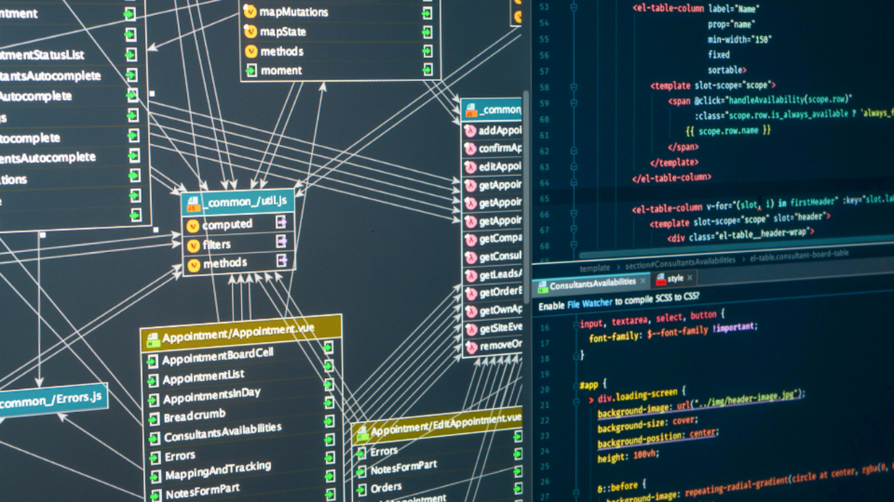

Desmitificando el Backend: La Máquina Oculta Detrás de la Magia
Cuando hablamos de desarrollo web, a menudo escuchamos sobre frontend y backend. Mientras que el frontend es la cara visible de una aplicación, el backend es el engranaje oculto que hace que todo funcione. En esta entrada, vamos a desglosar qué es el backend y por qué es crucial para cualquier aplicación web.

¿Qué es el Backend?
El backend es la parte del desarrollo web que se ocupa de lo que sucede detrás de las escenas. Es el servidor, la base de datos y las aplicaciones que trabajan entre bambalinas para asegurarse de que el frontend funcione perfectamente. Si el frontend es el actor en el escenario, el backend es el director entre bastidores.
Componentes del Backend
- Servidor
- Es el cerebro que recibe solicitudes del usuario, procesa esas solicitudes y devuelve las respuestas adecuadas. Tecnologías como Node.js, Django y Ruby on Rails son ejemplos de frameworks de backend que ayudan en esta tarea.
- Base de Datos
- Aquí es donde se almacena toda la información que utiliza tu aplicación. Bases de datos como MySQL, PostgreSQL y MongoDB son comúnmente utilizadas. El manejo eficiente de la base de datos asegura que los datos sean accesibles y seguros.
- API (Interfaz de Programación de Aplicaciones)
- Las APIs permiten que las diferentes partes de la aplicación se comuniquen entre sí. REST y GraphQL son dos estándares populares para la creación de APIs.
- Autenticación y Seguridad
- El backend también se encarga de la seguridad de la aplicación, desde la autenticación de usuarios hasta la protección de datos sensibles contra accesos no autorizados.
Lenguajes Populares para el Backend
- JavaScript (Node.js):Gracias a su naturaleza de alto rendimiento y escalabilidad, Node.js es una opción favorita para aplicaciones en tiempo real.
- Python (Django, Flask):Con su sintaxis clara y amplia comunidad, Python es ideal para aplicaciones rápidas y eficientes.
- Java (Spring):Conocido por su robustez y escalabilidad, Java es a menudo la elección para aplicaciones empresariales de gran envergadura.
- Ruby (Rails):Ruby on Rails es famoso por su rapidez en el desarrollo y una sintaxis amigable para los desarrolladores.